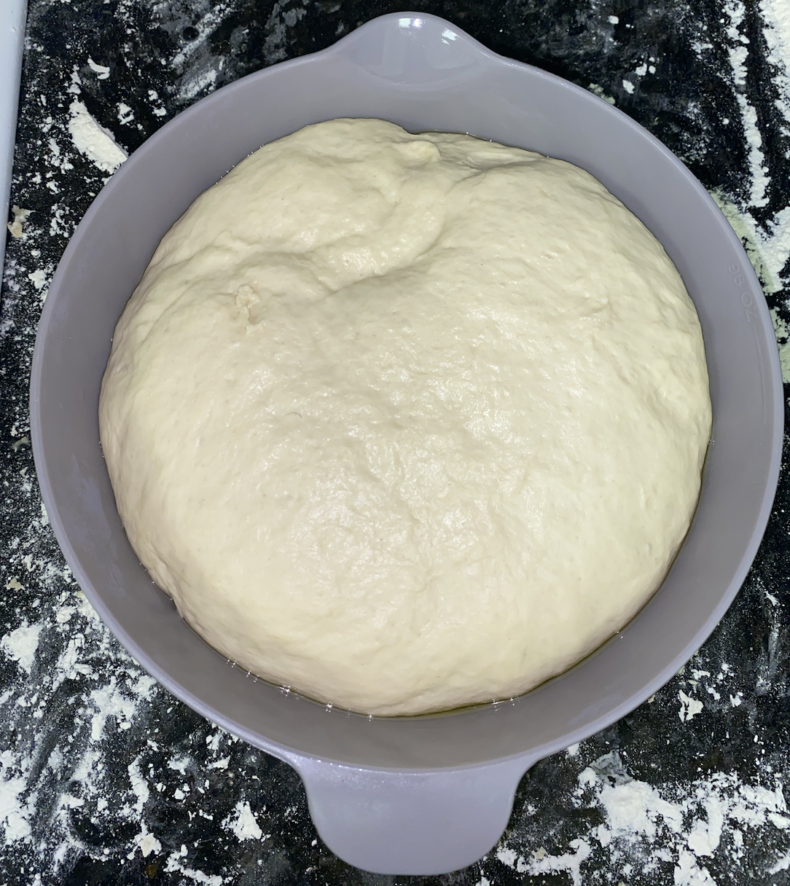
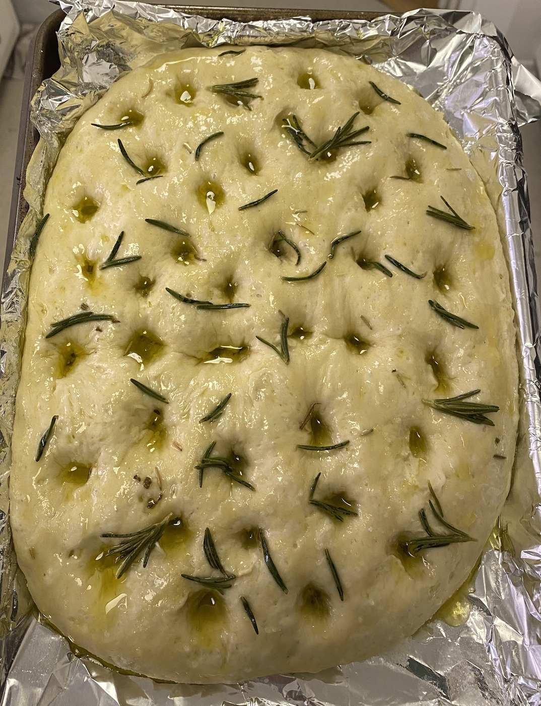
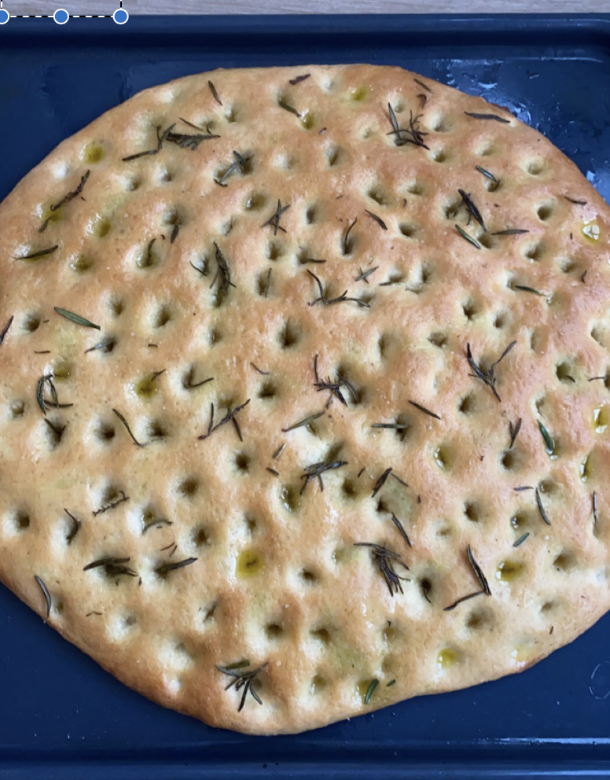

Rosemary Focaccia



Description
I made my first focaccia in March of 2021 and the entire thing was gone in minutes. At the request of my roommates and friends I made over 10 focaccias in the next two months.
Imagine a soft, fluffy, airy, bread made with rosemary infused olive oil and sprinkled with large course sea salt and rosemary needles. Now imagine it 10x better.
People will literally beg you to make this.
Ingredients
- 1/3 c warm water (think warm bath water temp)
- 2 tsp sugar
- 1 .25 oz packet active-dry yeast
- 3/12 c all purpose flour
- 1/4 + 1/8 c EVOO
- 2 tsp + 1 tsp flaky salt
- 4-5 sprigs fresh rosemary
Instructions
- First you'll need to infuse the EVOO. Place all of your EVOO into a small saucepan and add in a few sprigs of roseamary. Heat on low just until it is about to simmer, and then take off heat and let cool down for about an hour.
- Once the infused olive oil has cooled down we can begin the bread. First you will need to proof the yeast. Mix together your warm water and sugar until dissolved. Sprinkle the packet of yeast on top and stir to combine. Let sit for 10 minutes, after which it will become nice and bubbly. If it does not become bubbly your yeast is dead:( you'll need to start over with a new packet of yeast.
- Slowly add in your flour, 1/4 c of the infused olive oil, and 2 tsp of salt while mixing with a wooden spoon. I like to add in 1/2 c of flour at a time. When it becomes too difficult to mix with the spoon, pour the mixture out onto a floured surface and begin kneading.
- Knead the mixture for about 5 minutes, until smooth (feel free to add some more flour if it's too sticky). Form into a ball and place into an oiled bowl.
- Cover the bowl with a damp dish cloth and let rise in a warm place for about an hour. I normally leave it in the oven with just the light on.
- After one hour the dough should be double or triple or quadruple in size. Feel free to punch it down and take a video. Pour out onto your cookie sheet (best if lined with parchment paper). Use a rolling pin to roll out until it is about 1/2 inch thick. Cover with a damp dishcloth and let rise for another 20 min.
- Poke holes all over the focaccia all the way down. Then, pour about half of the remaining infused olive oil on top and I like to brush it on all over to make sure it is even. Sprinkle on the remaining flaky salt and fresh rosemary needles.
- Bake at 400°F for 20 minutes until golden brown on top. Drizzle with the remaining infused olive oil and enjoy! Best straight out of the oven.